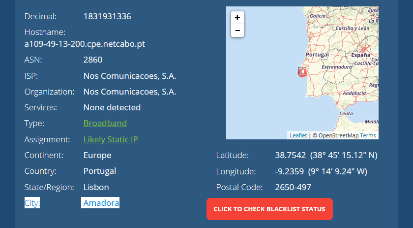
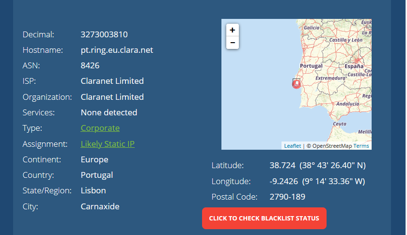
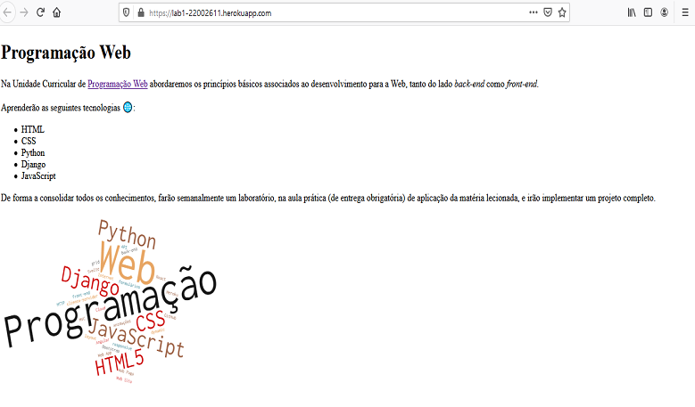
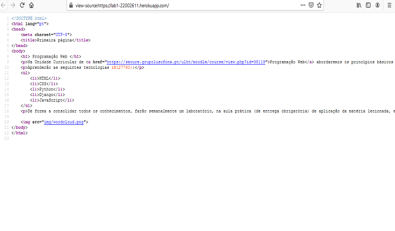
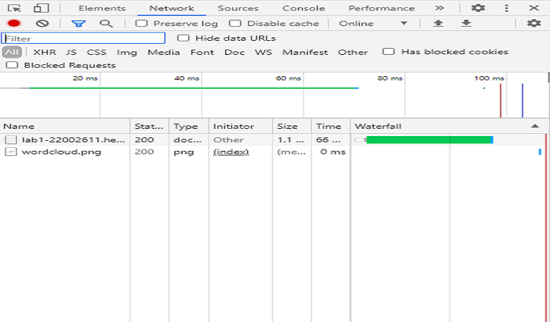

Report
Inspect
Preview
- No 1º ficheiro aparece a parte do texto que é mostrada no site.
- No 2º ficheiro aparece a imagem q será apresentada.
Headers
- Em ambos os ficheiros mostra Informações gerais do site.
Exemplos:
- Request UR, Request Method, Remote Address.
No ficheiro 2 são apresentadas mais informações como a data de modificação e Content-Lenght.
Timing
- No 1º ficheiros mostra os tempos de Resquest/Response, Waiting, Download.
- No 2º Ficheiro mostra só o tempo de Connection Start e o de Request/reponse.
Imagens Pedidas
Meu IP

IP Heroku

Print site

Codigo Fonte

Ficheiros Descarregados
